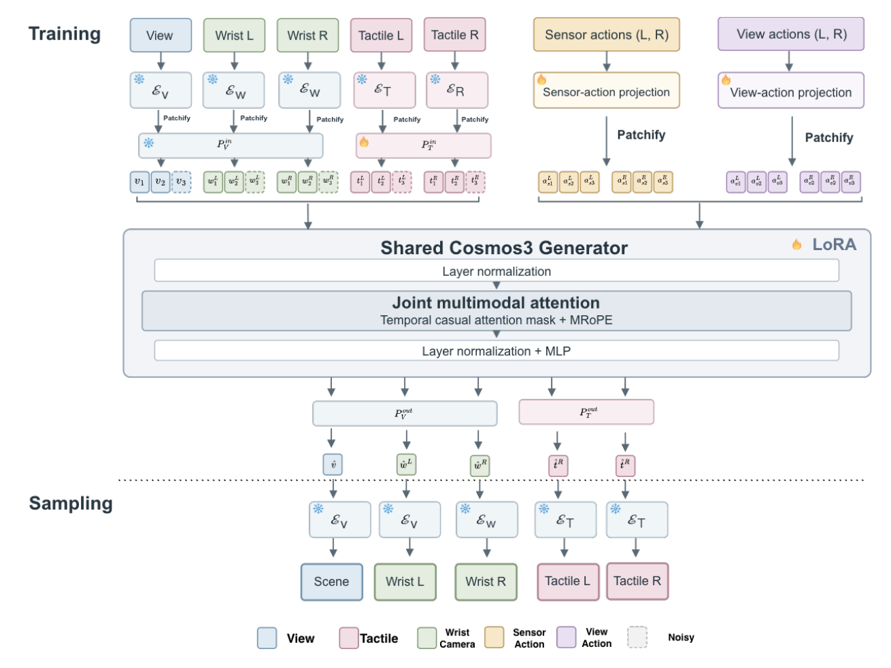
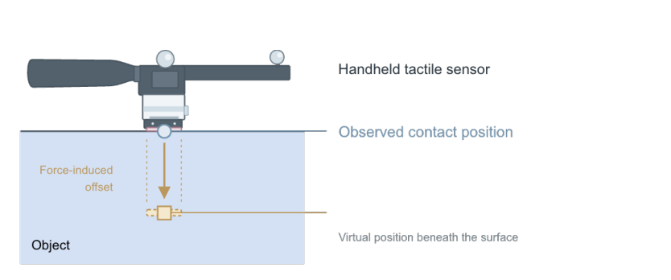

Paper under double-blind review
Action-conditioned world models require diverse interaction data to learn how actions change the physical world. For contact-rich manipulation, however, collecting such data with robots is costly: teleoperation limits collection throughput, and a fixed robot or gripper restricts the contact geometries and force-modulation behaviors that can be explored. We ask whether these dynamics can instead be learned directly from human physical interaction while remaining usable for robot control.
We present ACTS, a visuo-tactile world model trained entirely from human interaction. Human operators manipulate handheld tactile sensors while we record synchronized third-person and wrist video, bilateral GelSight observations, 6-DoF sensor motion, and tactile-derived force signals. To bridge human data and robot execution, we represent actions at the tactile sensing interface. ACTS jointly predicts future visual and tactile observations under candidate actions, and can be used directly for real-robot planning without robot-specific world-model fine-tuning.
Operators hold two independently movable handheld devices, each carrying a GelSight Mini, a motion-capture marker assembly for 6-DoF pose tracking, and a local camera. Three fixed cameras record the workspace. Operators slide, pivot, push, and pull a motherboard, a T-shaped block, and a rope, covering contact formation and release, sticking, sliding, and object motion.
Frozen encoders map the scene view, both wrist views, and both tactile streams to latents. A shared Cosmos3 generator, adapted with LoRA, jointly denoises future tokens of all five streams, conditioned on clean history and on two action representations for each hand: force-aware sensor actions and view-aligned actions.

Relative sensor motion is expressed in the sensor frame, and changes in estimated normal force are mapped to a displacement along the gel normal. The action therefore encodes both how the sensor moves and how hard it presses, in a form a robot can execute.

Given 8 observed frames and the recorded actions, ACTS predicts the next 8 frames (0.53 s at 15 fps) for all five streams.
ACTS rolls out autoregressively, feeding generated blocks back as context while following the full recorded action sequence.
The model is trained only on human interaction. On held-out bimanual robot episodes, sensor actions recorded at the robot's tactile sensors are fed directly to ACTS, without robot-specific fine-tuning.
All methods use the same tokenizer, data splits, test windows, and seeds.
| Task | Model | Short horizon | Long horizon | ||||
|---|---|---|---|---|---|---|---|
| PSNR↑ | SSIM↑ | LPIPS↓ | PSNR↑ | SSIM↑ | LPIPS↓ | ||
| Rope | VT-WM-style | 28.05 | 0.8878 | 0.1118 | 24.08 | 0.8080 | 0.2729 |
| ACTS (Ours) | 28.48 | 0.9016 | 0.0503 | 22.99 | 0.7743 | 0.1795 | |
| PushT | VT-WM-style | 27.69 | 0.8916 | 0.1047 | 22.97 | 0.7952 | 0.2553 |
| ACTS (Ours) | 29.14 | 0.9199 | 0.0409 | 22.55 | 0.7876 | 0.1789 | |
| Motherboard | VT-WM-style | 27.01 | 0.8692 | 0.0837 | 21.86 | 0.7333 | 0.2843 |
| ACTS (Ours) | 27.56 | 0.8763 | 0.0492 | 21.08 | 0.7067 | 0.1947 | |
The same model conditioned on pose-only actions, without the force-induced offset along the gel normal. Each pair uses the same test window and seed.
Representative failures, shown in the same GT / prediction layout.